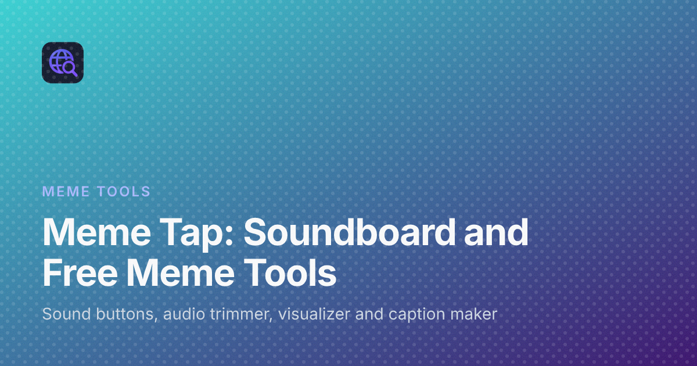

Meme Tap: A Browser Meme Soundboard with Free Meme Tools
Sometimes a joke needs a sound. A reaction clip in a voice call, a short sting in a stream, a punchline cut out of a longer recording, or a caption on a photo for a group chat. Most of these small jobs do not need a full editing app, but they do need something quick that works in the browser.
Meme Tap is built around that idea. It is a meme soundboard you open in a browser tab, and next to the sound buttons it offers a short set of free meme tools for trimming audio, turning a sound into a video and adding captions to a picture. This post walks through what the site offers, who it is for, and how to use each part.
What Meme Tap is
At its core, Meme Tap is a board of sound buttons. Each round button plays a short clip in the tab with one tap: meme lines, reactions, game stings, funny sounds and utility effects such as a pop or a button click. There is nothing to install and no account to create.
The main features of the board are simple:
- Search and categories. Search a name, or open a category such as memes, reactions, sound effects, viral sounds, TikTok trends, Discord or Pakistan trending.
- Trending and new. Separate pages show what people are tapping now and what was added recently, and a Random page picks a sound for you.
- Favourites without an account. Heart a button and it stays on the Favourites page in that browser.
- Download and share. Download saves the same file the button plays, and every button has its own page with a link you can copy and send.
Because the board is a normal web page, it can be used on networks where installing an app is not an option.
Who it is for
The site lists a few kinds of people it is built for, and they cover most uses:
- Streamers who want a sting, a fail clip or a laugh drop without leaving the broadcast.
- People on Discord and in chat apps who want a clip for a call or a server soundboard.
- Video editors who need a meme sound for a short clip on TikTok, Reels or YouTube Shorts.
- People making reaction images for WhatsApp and group chats, including jokes in Roman Urdu.
The tools
The tools page brings three editors together. All of them read your file inside the browser tab, so photos and audio are not sent to Meme Tap. Editing, preview and export happen on your device, and nothing is saved to an account, so download your result before you refresh the page.
Audio trimmer
The online audio trimmer cuts a voice note, a reaction or a sound effect down to the part you need. Drop in an MP3, WAV or OGG file up to 40 MB, drag the shaded region or its handles on the waveform, or type exact start and end times in seconds. Press Play clip to hear only the selection, then download it as WAV for an uncompressed copy or MP3 for a smaller file. The downloaded file keeps the original name with -trim added.
Audio visualizer
The audio visualizer turns a sound into a moving video. Drop in an MP3, WAV or OGG file up to 40 MB and choose one of three styles: waveform, frequency bars or circular. You can set the colour, the background, the bar size, the animation speed and the frame shape: 16:9 landscape, 9:16 vertical or 1:1 square. Preview it live with sound, then export a WebM video with the original audio. The export runs in real time, so a longer clip takes as long as the clip itself to record.
Meme caption generator
The meme caption generator adds top and bottom text to a picture. Upload a JPG, PNG or WebP up to 12 MB, or start from a template or one of the suggested local photos, such as chai, cricket or load shedding scenes. You can add extra text boxes, drag them on the preview, change the width from the corner, and pick Impact, Nunito or Arial with your own fill and outline colours. Download the result as PNG for sharp letters or JPG for a smaller file.
How to use Meme Tap, step by step
The tools follow the same short pattern, and they work well together with the soundboard:
- Find a sound. Search the board or open a category, tap a few buttons, and heart the ones you like.
- Download it. Open the sound's page and press Download to save the MP3.
- Trim it. Drop the file into the audio trimmer and keep only the part you need, for example a short clip for a Discord soundboard.
- Turn it into a video. Drop the trimmed clip into the visualizer, pick 9:16 for a vertical short, and export the WebM.
- Add a picture joke. For a still meme, open the caption generator, pick a photo or template, type your lines, and download.
A practical note from the tools page: only edit and share photos and audio you have the right to use. A download is not a licence, and each platform's rules still apply.
The guides on the blog
If you want more detail than a tool page gives, the Meme Tap blog has soundboard guides and tool walkthroughs. There are full guides for the audio trimmer, the audio visualizer and the caption generator, along with posts on how soundboards work, how to use soundboard sounds on Discord, setting up a soundboard for a podcast or live stream with OBS, and where well-known meme sounds come from.
Frequently asked questions
Is Meme Tap free?
Yes. The sound buttons and every tool are free to use, and you do not need to sign up or log in.
Are my files uploaded?
No. Each tool reads your file inside the browser tab, and editing, preview and export happen on your device.
Why won't my OGG file open?
Not every browser can decode OGG. If a file will not open, convert it to MP3 or WAV and try again.
Why is video export unavailable in the visualizer?
The WebM export needs browser support for recording video. If your browser does not support it, the preview still works, and you can try another browser.
Can I use the tools on a phone?
Yes, the pages work in a mobile browser. The same file limits apply, and some phone browsers cannot open OGG files or export video.
Wrapping up
Meme Tap keeps the whole loop in one place: find the sound, cut the line, turn it into a video or add a caption, and post it. If you often need a quick clip or a captioned picture and do not want to open a heavy editor, the soundboard and its tools are worth a bookmark.